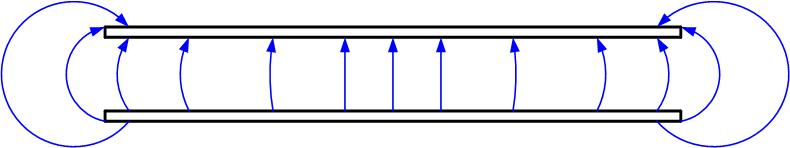
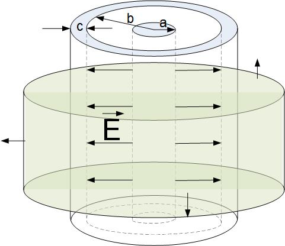

not enough information

Figure 8: A coaxial cable, with inner conductor charged with positive scharge
and outer conductor charged with
Capacitance is a constant that relates the amount of charge on a conductor with a potential difference between conductors. Whenever we have two conductors at different potentials, separated by an insulator (dielectric), there will be electric field between them, and we can define the ability for those two conductors to store charge. This is called a capacitance.
From Gauss’s law, we found that the electric field is proportional to the charge enclosed . The capacitance therefore represents the strenght of the electric field around a conductor for a fixed voltage between the conductors. If we for example have two sets of conductors, for the same voltage between them the electric field will be stronger around the conductor set with higher capacitance, and this conductor set will have higher ability to store charge. It will store more charge for the same voltage difference than the other conductor set.
Capacitance relates the current with the change in voltage. The current is defined as the change of charge in time . Since charge is from the above equation equal to the product of capacitance and voltage, Q=CV, then the current is proportional to the change in voltage. If the voltage changes twice as fast, the current doubles. The voltage V is the potential difference between the positive and negative plate of the capacitor.
Capacitance can be computed:
Capacitors are components that provide capacitance in electronic circuits. They are used in filters, PCB power-distribution networks, matching circuits, delay lines etc. Typical capacitors are shown in Figure fig:capacitors. Earth is a conductor, so any conductor either on it’s own or in pair with another conductor can be modeled as a capacitor. For a single conductor, for example a metallic conductor in air, the other ”conductor” is earth, or another nearby metallic object. Transmission lines have two conductors, a ”signal” and ”ground” conductor, so they have capacitance per unit lenght, and we can model them with a distributed capacitors. In this section, using Maxwell’s equations, we will derive equations for capacitance for typical capacitors and transmission lines.
A parallel plate capacitor consists of two conductive plates, as shown in Figure fig:ParallePlateCapacitorPlain. The surface area of the plates is S and the charge on each plate is Q. The plates are separated by a distance d (). Homogeneous dielectric with dielectric constant of fills the space between electrodes.
The electric field in an actual parallel-plate capacitor is shown in Figure

The condition that d¡¡S allows us to ignore fringing fields at the edge of the capacitor, and to assume that the field is equal to the field of two infinite parallel plates of charge. This means that the field is constant in between the plates, oriented from positive to negative plate and zero outside of the plates, as shown in Figure fig:ParallePlateCapacitorCircuit.
To find the electric field inside the capacitor, we apply Gauss’s law to a cylinder whose bottom half is in the dielectric, with the bottom base at the point where we want to find the field, and the top half is in the air above one of the charged plates as shown in Figure fig:ParallePlateCapacitorGauss. We see that the flux through the capacitor exists only through the bottom base. The flux through the top base is zero because the field outside the capacitor is zero, and the flux through the side of the cylinder is zero because the electric field does not not go through that surface (in other words the angle between the field and the normal to the surface is , and therefore the dot product is zero.) Mathematically, we start from the Gauss’s law, assuming that the dielectric permeability is , where is the dielectric constant of the material between capacitor’s plates.
We split the cylindrical surface S into two base surfaces and a side surface.
The dot product between the electric field and the normal to the cylindrical top (S3) surface is zero, because electric field is zero outside of the capacitor. The dot product is zero on the side surface because there is no flux through it, the normal to the surface and the electric field are perpendicular . The flux through the bottom surface (S1) is just the product of the magnitudes of E and dS , because the normal to the surface and the electric field are in the same direction. We can now take the electric field outside of the integral, and the integral around the closed surface then becomes
The integral of surface S1 is just the surface area of the bottom surface.
In the above equation, the ration is just the surface charge density . The final electric field expression for the infinite sheet of charge should include the unit vector of the direction of the field. We will assume that the z-axis is in the up direction from the bottom to the top plate. The field is then
Now that we found the electric field of the paralle plate capacitor, we need to find the potential difference between the two plates, from positive to negative plate. The positive plate in this case is the top plate, so we integrate from d to 0. The potential is defined as
We will find the potential from the bottom plate at z=0 to the top plate at z=d. In the equation above will always
This potential should be positive, because we integrated from the higher to the lower potential. The potential at a lower plate is lower than the potential at the higher plate. If you make a mistake and get a negative potential, it just means you should have started from the positive plate and integrated to the negative plate to get the positive potential difference. However, the , so we can just take the magnitude of the negative potential difference. If the potential difference is a function, make sure that the . The total charge on one plate is , where S is the area of the plates. The capacitance is then
Coaxial cable consists of a solid inner conductor and a conductive outer shell, Figure fig:coaxialCapacitorGaussInside.
If we apply Gauss’s law to a cylinder outside of the outer conductor, as shown in Figure fig:coaxialCapacitorGaussOutside, we see that the field is zero, because the total charge enclosed is zero.

To find the capacitance we need to find the electric field between the inner and outer conductor of a coax. We apply Gauss’s law to the green closed cylindrical surface shown in Figure fig:coaxialCapacitorGaussInside. Following the steps in the section on finding the field around the infinite line of charge, we find the field inside the capacitor.
To find the potential, we integrate from the inner to the outer conductor.
The capacitance is then
Use the calculator below to find the capacitance of RG6 Coaxial Cable, made by Mouser, part number 40001. See data sheet here. Assume PE dielectric constant is 2.25. Compare with the value in the data sheet.
Our earth is a giant spherical capacitor, with ground as one electrode and the ionosphere as another. Spherical capacitor in Figure fig:sphericalCapacitor consists of two concentric shells with radii a and b. The thickness of the outer shell is c-b. The inner shell is charged with charge Q and outer shell charged with charge -Q. If we apply Gauss’s Law to a sphere larger than c, we see that the total charge enclosed is zero, and the field must be zero as well. Between the plates, the field is oriented radially from the positive to the negative charge. Application of Gauss’s law to a sphere of a radius r between radii a and b leads to the following equation
The surface area of the sphere is .
The potential difference between the inner and outer shell is
The capacitance is then

Electrostatic energy is defined as
Energy of a charged capacitor can be expressed by any of the following equations
From the definition of electrostatic energy, and the expression for energy of a charged capacitor, we can find the capacitance:
You can try and solve the capacitance for the above problems again, by using the Equation eq:capacitanceEn.
Now, watch the videos below to experience the energy stored in a charged capacitor, and see how a fuse and camera flash work by discharging a capacitor.
Do not attempt these demonstrations at home, touching the capacitor’s electrodes can be fatal, as humans are good conductors of electricity. Demonstrations were performed at MIT by Prof. Emeritus Walter Lewin.